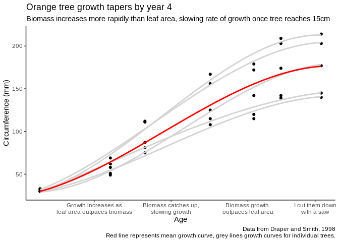
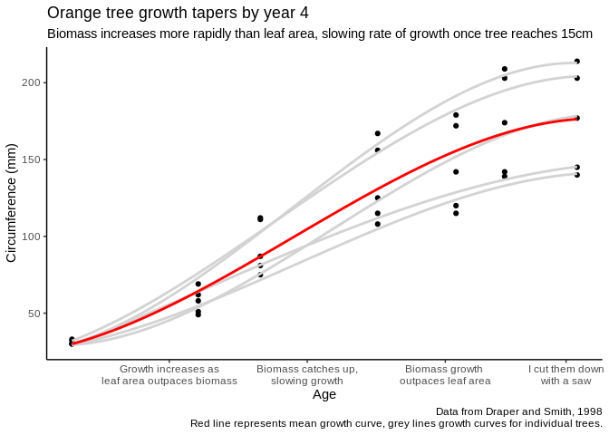

knitr::include_graphics("theory2.png")
(Note: this is part one of a three part series on data visualization, originally published on Towards Data Science in 2019.
Data visualization – our working definition will be “the graphical display of data” – is one of those things like driving, cooking, or being funny: everyone thinks they’re really great at it, because they’ve been doing it for a while, and yet many – if not most – people don’t even know where they could start learning how much better they could be doing things. For something so essential to so many people’s daily work, data visualization is so rarely directly taught, and is usually assumed to be something people will pick up with time.
However, that isn’t the best approach. Data visualization is a skill like any other, and even experienced practitioners could benefit from honing their skills in the subject. Hence, this series.
This series doesn’t set out to teach you how to make a specific graphic in a specific software. I don’t know what softwares might be applicable to your needs in the future, or what visualizations you’ll need to formulate when, and quite frankly Google exists – so this isn’t a cookbook with step-by-step instructions. The goal here is not to provide you with recipes for the future, but rather to teach you what flour is – to introduce you to the basic concepts and building blocks of effective data visualizations.
As much as possible, I’ve collapsed those concepts into four mantras we’ll return to throughout this course. The mantras are:
Each mantra serves as the theme for a section, and will also be interwoven throughout. The theme of this section is, easily enough:
When making a graphic, it is important to understand what the graphic is for. After all, you usually won’t make a chart that is an exact depiction of your data – modern data sets tend to be too big (in terms of number of observations) and wide (in terms of number of variables) to depict every datapoint on a single graph. Instead, the analyst consciously chooses what elements to include in a visualization in order to identify patterns and trends in the data in the most effective manner possible. In order to make those decisions, it helps a little to think both about why and how graphics are made.
As far as the why question goes, the answer usually comes down to one of two larger categories:
These are the rationales behind creating what are known as, respectively, exploratory and explanatory graphics. Exploratory graphics are often very simple pictures of your data, built to identify patterns in your data that you might not know exist yet. Take for example a simple graphic, showing tree circumference as a function of age:

This visualization isn’t anything too complex – two variables, thirty-five observations, not much text – but it already shows us a trend that exists in the data. We could use this information, if we were so inspired, to start investigating the whys of why tree growth changes with age, now that we’re broadly aware of how it changes.
Explanatory graphs, meanwhile, are all about the whys. Where an exploratory graphic focuses on identifying patterns in the first place, an explanatory graphic aims to explain why they happen and – in the best examples – what exactly the reader is to do about them. Explanatory graphics can exist on their own or in the context of a larger report, but their goals are the same: to provide evidence about why a pattern exists and provide a call to action. For instance, we can reimagine the same tree graph with a few edits in order to explain what patterns we’re seeing:
knitr::include_graphics("theory2.png")
I want to specifically call out the title here: “Orange tree growth tapers by year 4.” A good graphic tells a story, remember. As such, whatever title you give your graph should reflect the point of that story – titles such as “Tree diameter (cm) versus age (days)” and so on add nothing that the user can’t get from the graphic itself. Instead, use your title to advance your message whenever it makes sense – otherwise, if it doesn’t add any new information, you’re better off erasing it altogether.
The important takeaway here is not that explanatory graphics are necessarily more polished than exploratory ones, or that exploratory graphics are only for the analyst – periodic reporting, for instance, will often use highly polished exploratory graphics to identify existing trends, hoping to spur more intensive analysis that will identify the whys. Instead, the message is that knowing the end purpose of your graph – whether it should help identify patterns in the first place or explain how they got there – can help you decide what elements need to be included to tell the story your graphic is designed to address.
The other important consideration when thinking about graph design is the actual how you’ll tell your story, including what design elements you’ll use and what data you’ll display. My preferred paradigm when deciding between the possible “hows” is to weigh the expressiveness and effectiveness of the resulting graphic – as defined by Jeffrey Heer at the University of Washington, that means:
Or, to simplify:
Keep this concept in the back of your mind as we move into the mechanics of data visualization in our next post – it should be your main consideration while deciding which elements you use! We’ll keep returning to these ideas of explanatory and exploratory, as well as expressiveness and effectiveness, throughout the rest of this article.